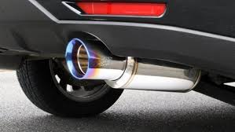
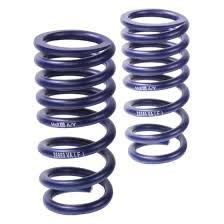
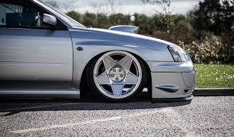
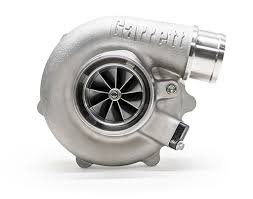

Vehicle Modifications
In the world of cars there are many different modifications you can add to any car to make it faster, look better or even sound better. There is a massive variety of brands for vehicle modifications all over the world. Here are some of the most popular modifications and what they are used for.
Exhaust

A performance exhaust can free up some of the power in your engine by allowing the gases to escape a bit easier. When the gases can escape, your engine runs smoother. Anyway, when the exhaust flows better, the fuel and air exit the combustion chamber faster and new fuel and air can be burned to create more power. It can improve the sound of your vehicle and make it louder.
Lowering springs


Lowering springs are one of the most basic components of a suspension system. As the name suggests, they are meant to lower your vehicle from its original height. However, lowering springs will be a few inches less taller than the stock springs. Hence, when you install them on your shocks your car lowers.
Turbocharger

A turbocharger, colloquially known as a turbo, is a turbine-driven, forced induction device that increases an internal combustion engine's efficiency and power output by forcing extra compressed air into the combustion chamber. With a turbo if you want it to make a flutter sound you can add a Blow-off valve. A blow-off valve is a pressure release system present in most turbocharged engines. Its main purpose is to take the load off the turbocharger when the throttle is suddenly closed.